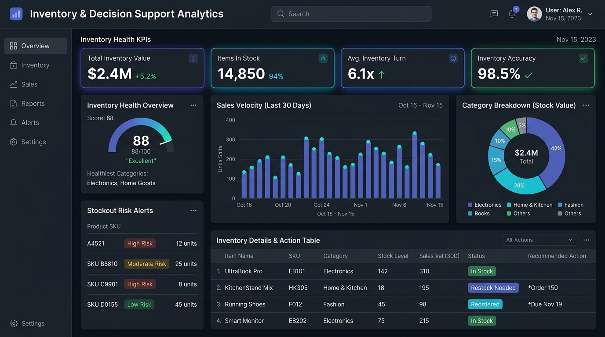
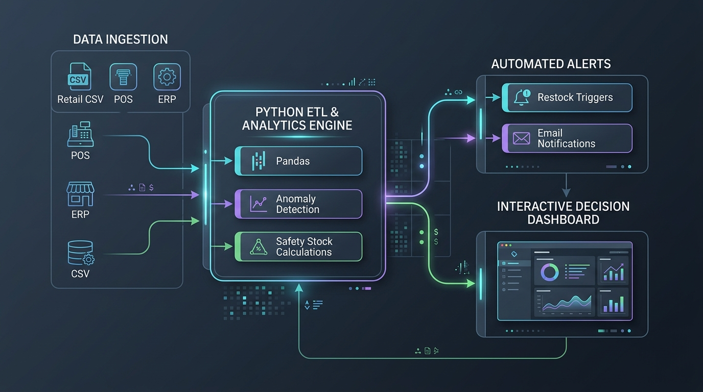

Retail Inventory Optimization & Decision Support Analytics
An automated decision-support pipeline designed to streamline inventory auditing, model safety stock, and eliminate critical stockouts across retail merchandising channels.
An automated decision-support pipeline designed to streamline inventory auditing, model safety stock, and eliminate critical stockouts across retail merchandising channels.

In dynamic retail and equipment services—such as lawn & garden product merchandising (Scotts Miracle-Gro) and equipment parts logistics (C&M Outdoor Power)—inventory levels fluctuate quickly. Traditional stores often rely on manual physical counting, periodic spreadsheets, and reactive ordering once shelves have already depleted.
When unexpected demand surges occur, items stock out before purchase orders can be processed, leading to lost customer revenue and supply disruptions. The objective of this project was to establish an automated pipeline connecting transactional register sales with dynamic reorder points to support proactive purchasing decisions.
Raw transactional sales logs are extracted from Point of Sale (POS) and warehouse spreadsheets, fed through a Python ETL script, and converted into visual manager dashboards.

This core Python function calculates dynamic safety buffers based on daily sales standard deviation and supplier lead times:
# inventory_analytics.py — Dynamic Safety Stock & Reorder Engine
import pandas as pd
import numpy as np
def evaluate_inventory_risk(df, supplier_lead_time_days=5, service_factor=1.65):
"""
Evaluates retail SKUs to flag high-risk stockout items based on daily sales variance.
service_factor = 1.65 represents a 95% service level buffer against unexpected surges.
"""
# Compute daily run-rate and safety stock buffer
df['daily_velocity'] = df['units_sold_30d'] / 30.0
df['safety_stock'] = (
service_factor * df['daily_velocity_std'] * np.sqrt(supplier_lead_time_days)
).round(0)
# Reorder point: expected demand during lead time + safety stock
df['reorder_point'] = (
(df['daily_velocity'] * supplier_lead_time_days) + df['safety_stock']
).round(0)
# Classify stock health status
conditions = [
df['current_stock'] <= df['reorder_point'],
df['current_stock'] <= (df['reorder_point'] * 1.25)
]
labels = ['High Risk', 'Moderate Risk']
df['risk_level'] = np.select(conditions, labels, default='Optimal')
return df[df['risk_level'] != 'Optimal'].sort_values(by='daily_velocity', ascending=False)